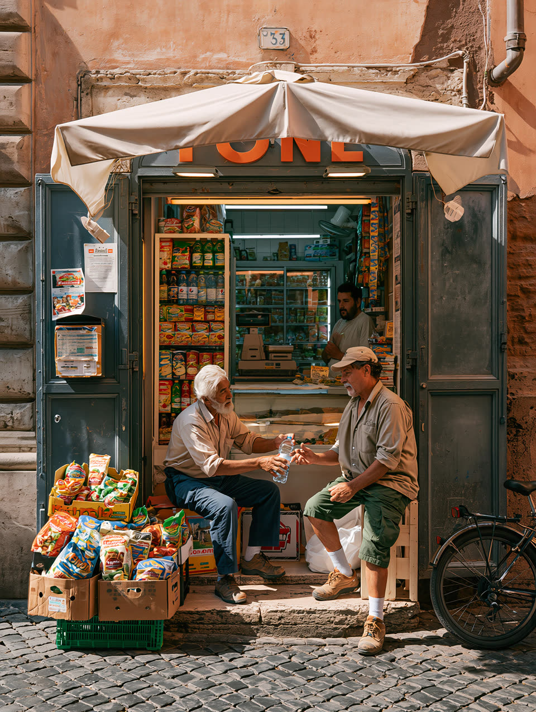

Kling Image 4.0 official documentary still: two old men pass a water bottle at a terracotta corner grocery, straight-on, verticals kept vertical
REA-091RealismKling Image 4.0by Kling AI (official)2026-11-18

Official "Documentary Photography" example: a straight-on, eye-level storefront with "architectural lines mostly vertical", a cream awning across the top fifth, two elderly men at the entrance whose hands and the bottle sit "in the center of the lower half of the frame". Hard clear-day sun from the upper right, deep shade in the doorway, and a closing guard line ("Do not turn the store into a modern convenience store or remove the awning, snack boxes, or bicycle"). A model for writing an everyday interaction as the subject of a realism still.
Prompt
3:4 vertical composition, a straight-on documentary photograph of a narrow corner grocery store built into a weathered terracotta-pink wall. Eye-level camera, with the storefront centered and the architectural lines mostly vertical. Keep the entire upper wall and the stone-paved street below in the frame. The upper fifth of the image features a cream-colored fabric awning extending outward on both sides, with a pointed peak in the center. Beneath it are two open, dark forest-green shop doors. Only part of the large orange lettering on the sign above is visible. Inside, the shelves on the left are densely stocked with colorful packaged snacks and bottled drinks, with a glass-fronted refrigerator in the back and a young shop assistant standing behind the counter. Two elderly men sit facing each other at the entrance. On the left, an elderly man with white hair and a white beard wears a light beige shirt with rolled-up sleeves and dark blue trousers. He leans forward, extending his right hand to offer a clear plastic water bottle. On the right, another elderly man wears a light khaki baseball cap, a gray-brown shirt, olive-green knee-length shorts, white socks, and brown shoes. He reaches out to take the bottle. Their hands and the water bottle are positioned in the center of the lower half of the frame. In the lower-left foreground are stacked cardboard boxes and brightly colored snack bags. A black bicycle is partially visible in the lower-right corner. The bottom of the frame shows a road paved with irregular dark gray stones. Direct sunlight on a clear day enters from the upper right, illuminating the two men's faces, hands, and clothing while casting deep shadows inside the doorway and shop. The warm terracotta wall contrasts naturally with the cool green-gray shop doors. Do not turn the store into a modern convenience store or remove the awning, snack boxes, or bicycle.
Our Seedance 2.5 adaptation
[ADAPTED for Seedance 2.5 by Grok Bot; not the creator's prompt. Follows the official BytePlus Seedance 2.5 prompt guide and its official sd25-pe prompt-optimizer skill: parameters only on the API line (not in the prompt body), subject + action + scene, then visuals, camera (move, subject, start, direction, arrival) and sound; only the source's own exclusions are kept.] API: duration 6, ratio 3:4 (taken from the first frame), resolution 1080p (4k for a final), generate_audio true; first_frame = the REA-091 still. 【Subject】The two elderly men at the entrance of the terracotta-pink corner grocery, as in the first frame. 【Action】The man on the left hands the clear water bottle across; the man in the khaki cap takes it, nods, unscrews the cap and drinks; the left man leans back and laughs quietly. Inside, the young shop assistant moves behind the counter. 【Camera】Locked-off, straight-on, eye level; vertical lines stay vertical; no camera movement. 【Visuals】Hard clear-day sunlight from the upper right on their faces, hands and clothing; deep shade in the doorway; cream awning, forest-green doors, stacked snack boxes and the black bicycle unchanged. 【Sound】Street ambience, a scooter passing, the crackle of the plastic bottle, a short exchange in low voices with no clear words. No music.
Tags: Kling Image 4.0, official example, documentary, street corner shop, frontal composition, vertical lines, hand-off moment, hard sunlight, guard line, image